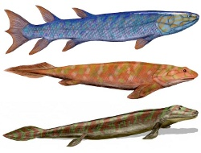

A few selected transitional fossils
Apes - humans
|
Fish - tetrapods
|
Dinosaurs - birds
Synapsids - mammals
|
Land mammals - whales
|
Protohorses - horses
Miscellaneous
|
Other
|
Credits
|
References
Introduction: All species undergo gradual change over time, but in the fossil record we find evidence of some changes that are particularly striking. This website is dedicated to some of these so-called transitional fossils.
Warning 1: The images are only artist's conceptions and might contain errors; so I keep a page with links to photos or diagrams of the fossils themselves.
Warning 2: When a fossil is called "transitional" between two types of animal, that means it shows some of the traits of both, but it does not mean it links those animals by direct descent. Evolution is a branching process - by which we mean that species often split in two. Therefore:
"Because evolution is a branching process that produces a complex bush pattern of related species rather than a linear process that produces a ladder-like progression, and because of the incompleteness of the fossil record, it is unlikely that any particular form represented in the fossil record is a direct ancestor of any other."
— Rusty Cashman / Wikipedia
In short, transitional fossils are best thought of as being close relatives of the species which actually link two groups. They may have lived at the same time as those actual links, or they may not have (this confuses many people). As long as these problems are borne in mind, transitional fossils give a rough indication of what evolutionary changes were occurring. But don't be misled into thinking that fossils are the only evidence for evolution. They're not even the strongest evidence for evolution.
Apes - humans
Most ape-like at the top (though in a technical sense, humans are still considered apes). Images and diagrams of the fossils here.
Sometimes called "the only transition which matters", this mustn't be thought of as a transition from chimps to humans, but rather, as a transition from the-common-ancestor-of-chimps-and-humans to humans. Chimps themselves have had time to evolve and change since we parted ways, and so "the ancestor we last shared probably differed substantially from any extant African ape" (White et al, 2009).
- Ardipithecus ramidus
~4.4 million years ago
- Ardipithecus ramidus had a brain the size of a chimp's, but probably walked upright on the ground, while still able to go on all fours in the trees, where it would find its opposable big toe useful (Gibbons, 2009).
- Australopithecus afarensis
~3.6 mya
- Australopithecus afarensis was a more advanced walker, with nongrasping feet (White et al, 2009), but it still had the brain size of a chimpanzee (Dawkins, 2009). Probably not a direct ancestor of modern humans (Rak et al, 2007).
- Australopithecus africanus
~3 mya
- Similar.
- Homo habilis
~2 mya?
- Homo habilis had a brain about 50% bigger than a chimp's. The fossils are found with a variety of stone tools; this is the earliest human which we're sure used tools (Coyne, 2009).
- Homo erectus
~1 mya
- A tool-maker, Homo erectus had a brain size of about 1,000 cc, still smaller than our own (Dawkins, 2009).
- Homo heidelbergensis
~0.5 mya
- Homo heidelbergensis had a brain size approaching our own, and shows a mix of Homo erectus and modern human features (Coyne, 2009).
Fish - tetrapods
Most fish-like at the top. Images and diagrams of the fossils here.
Update: This group of fossils were thought to be roughly contemporary with the transition onto land. However, recently tracks of a four-footed animal were discovered in marine sediments firmly dated at 397 million years old (Niedzwiedzki et al, 2010). If that animal was a genuine tetrapod, then creatures like Tiktaalik may have been "late-surviving relics" exhibiting transitional features that actually evolved somewhat earlier.
In short, these are not the actual ancestors of modern land animals; but they are related to the actual ancestors, and so they do show us the sort of creature that evolved during the great move onto land.

Eusthenopteron,
Panderichthys,
Tiktaalik
© Nobu Tamura
- Eusthenopteron
~385 million years ago
- A pelagic fish, Eusthenopteron is probably representative of the group from which tetrapods evolved. It had a tetrapod-like skull and spine (Prothero, 2007).
- Panderichthys
~385 mya
- Panderichthys had a tetrapod-like braincase and tetrapod-like teeth, and had also lost its dorsal and anal fins (Prothero, 2007).
- Tiktaalik
~375 mya
- Though still a water-dweller, Tiktaalik had fins that were halfway towards being feet, and ears capable of hearing in air or water (Prothero, 2007). It was capable of crawling around in very shallow water, and it had a neck, unlike fish but like tetrapods (Coyne, 2009).
- Ventastega
~365 mya
- The bones of Ventastega are intermediate between Tiktaalik and Acanthostega (Ahlberg et al, 2008). Sadly, the fossil is incomplete and we can't see its fins/feet.
- Acanthostega
~365 mya
- Possessing four definite legs, Acanthostega was presumably capable of movement over land (Coyne, 2009), though the legs were still better suited for crawling along the bottom of the water (Prothero, 2007). Its tail was still adapted for propulsion through water, and it still had gills (Ridley, 2004).
- Ichthyostega
~365 mya
- Slightly more like a land animal, Ichthyostega had powerful shoulders implying it did indeed use its legs to move over land, at least sometimes (Clack, 2005). Even now, the skull still closely resembled that of Eusthenopteron (Futuyma, 2005).
- Pederpes
~350 mya
- The foot of Pederpes "has characteristics that distinguish it from the paddle-like feet of the Devonian forms [i.e. the above animals] and resembles the feet of later, more terrestrially adapted Carboniferous forms" (Clack, 2002).
These creatures were related to the lungfish of their time, and almost certainly all had lungs themselves.
It would be a mistake to think that the first tetrapods moving on land needed limbs capable of bearing their full weight; legs sprawled to the side would be enough to move about with. One thing the above fossils seem to show is that legs first evolved for crawling over the bottom of the water; only later did their use on land become paramount.
Dinosaurs - birds
Most dinosaur-like at the top. Images and diagrams of the fossils here.
- Anchiornis
~155 million years ago
- Although many feathered dinosaurs are known, Anchiornis is the first to be found that probably predates Archaeopteryx. The feathers were "not obviously flight-adapted" (Hu et al, 2009).
- Archaeopteryx
~145 mya
- The famous Archaeopteryx had feathers and was probably capable of at least gliding, but it also had dinosaur-like teeth, claws, and a long bony tail. Its skeleton was "almost identical to that of some theropod dinosaurs" (Coyne, 2009). Precisely how closely related it is to the main line of bird evolution remains the subject of controversy (Xu et al, 2011).
- Confuciusornis
~125 mya
- Confuciusornis had a bird-like tail and a pygostyle, which is a feature of modern birds. It retained dinosaur-like claws (Prothero, 2007). It had strong shoulder bones, but was probably not capable of true flapping flight (Senter, 2006). It may have glided. It is the earliest known bird with a toothless beak, but other lineages continued to have teeth for a long time.
- Sinornis
~110 mya?
- Sinornis "still had teeth, an unfused tarsometatarsus, and an unfused pelvis" (Prothero, 2007) but resembled modern birds in other ways, with reduced vertebrae, a flexible wishbone, a shoulder joint adapted for flying, and hand bones fused into a carpometacarpus (Prothero, 2007).
- Vorona
~80 mya?
- The legs of Vorona are all that we have (Benton, 2005), but they show a combination of bird characteristics and maniraptoran (dinosaur) characteristics (Forster et al, 1996).
- Ichthyornis
~80 mya
- A strong flyer, Ichthyornis was very nearly a modern bird (Prothero, 2007), and yet it still had teeth.
As birds evolved from dinosaurs, and required feathers to fly, the existance of non-flying, feathered dinosaurs is a prediction of evolution. Happily, we have now discovered a significant number of such dinosaurs, one of which, Mei long, was even found curled-up in a remarkably bird-like sleeping position (picture here).
The first feathered dinosaurs found were more recent than Archaeopteryx — feathered dinosaurs didn't die out as soon as birds evolved — but we now have Anchiornis, which has shown that feathered dinosaurs did indeed exist before Archaeopteryx.
One will occasionally encounter vague suggestions that birds evolved from (non-dinosaur) reptiles. John Ruben and colleagues are the main supporters of this idea, but it remains very much a minority view. Michael Benton (who literally wrote the book on vertebrate paleontology) considers the controversy artificially extended by the popular media's obsession with giving both sides "equal time", even though the dinosaur-bird view is supported by the vast majority of working palaeontologists (Benton, 2005). The University of California Museum of Paleontology has a reasonable overview of the dinosaur-bird relationship.
Synapsids - mammals
Most synapsid-like at the top. Images and diagrams of the fossils here.
Strictly speaking, the group that gave rise to mammals were not true reptiles (though they were closely related). Therefore, there is no transition from reptiles to mammals, but rather from synapsids to mammals. However, the terms mammal-like reptiles and reptile-like mammals are still sometimes used for these transitional fossils.
- Archaeothyris
~305 million years ago
- Mostly lizard-like. However Archaeothyris is one of the earliest known synapsids; a group defined by possession of a single temporal fenestra (Ridley, 2004).
- Dimetrodon
~280 mya
- Dimetrodon had specialised canine teeth (Prothero, 2008) akin to those of modern mammals.
- Lycaenops
~260 mya
- More mammal-like, especially in how it held its limbs: closer to its body like modern mammals, rather than sprawled to the side like Dimetrodon (Prothero, 2007). It still had a great many "primitive" features, such as ribs in the lumbar area (Prothero, 2007).
- Thrinaxodon
~245 mya
- Had the beginning of a secondary palate in its skull (Prothero, 2007); in modern mammals, this allows eating and breathing at the same time, and is a sign of a more active lifestyle (Ridley, 2004). Its more advanced skull also allowed it to chew its food; and indeed it had premolars and molars with which to do so (Prothero, 2007). The skeleton was not yet fully mammal-like, but it had lost those lumbar ribs.
- Probainognathus
~225 mya?
- Probainognathus still possessed a reptile-like jaw articulation (Macdonald et al 2009) but also had "the initiation of the articulation which was later to become the more highly developed glenoid-condyle articulation of the mammal" (Romer, 1969). It had a well developed zygomatic arch (Macdonald et al 2009). However, its braincase was very unlike that of modern mammals (Romer, 1969).
- Diarthrognathus
~210 mya?
- The fascinating Diarthrognathus had a jaw that contained both the old reptile-like joint as well as the new mammalian joint (Prothero, 2007).
This is merely a small selection of fossils which could be named as transitional synapsids. Wikipedia has an impressive list of therapsids, a subset of the synapsids.
Land mammals - whales and dolphins
Most land-mammal-like at the top. Images and diagrams of the fossils here.
- Indohyus
~48 million years ago
- Although only a cousin species of the ancestor of whales, Indohyus had bones denser than normal mammals, indicating it was partially aquatic: heavy bones are good ballast (Thewissen et al, 2009). Its ears shared a feature with modern whales: a thickened wall of bone which assists in underwater hearing; non-cetaceans don't have this (Thewissen et al, 2009).
- Pakicetus
~52 mya
- Perhaps the actual ancestor, Pakicetus was probably semi-aquatic; like Indohyus, it had dense bones for ballast (Thewissen et al, 2009). Its body was "wolf-like" but the skull had eye sockets adapted for looking upwards, presumably at objects floating above it (Thewissen et al, 2009). Although initially known from just a skull, many more bones were found later (Thewissen et al, 2001).
- Ambulocetus
~50 mya
- With a streamlined, elongated skull and reduced limbs, Ambulocetus probably spent most of its time in shallow water. Its reduced limbs meant it could only waddle on land (Coyne, 2009). It resembled a crocodile in some ways.
- Rodhocetus
~45 mya
- The nostrils of Rodhocetus have started to move backwards (towards the blowhole position) and the skeleton indicates a much stronger swimmer (Coyne, 2009). On land it would struggle, moving "somewhat like a modern eared seal or sea lion" (Gingerich et al, 2001). Its teeth were simpler than its predecessors (Futuyma, 2005), a trend that continued to the present.
- Maiacetus
~47 mya
- Seems similar to Rodhocetus. One fossil was found with what appeared to be a foetus, in a position indicating head-first birth (Gingerich et al, 2009) unlike modern whales. However this is disputed; the "foetus" might just be a partially digested meal (Thewissen and McLellan, 2009).
- Basilosaurus
~40 mya
- The whale-like, fully aquatic Basilosaurus had almost lost its (tiny) hindlimbs, but they had not yet vanished entirely (Prothero, 2007).
- Dorudon
~40 mya
- Also fully aquatic, Dorudon also had tiny hind limbs, which "barely projected from the body" (Futuyma, 2005).
- Aetiocetus
~25 mya
- The blowhole in Aetiocetus is about halfway to its position in modern whales on top of the head. Aetiocetus also represents the transition from toothed whales to the filter-feeding baleen whales, being similar to baleen whales in most respects, but possessing teeth (Van Valen, 1968).

Basilosaurus © Sharon Mooney, based on an image from National Geographic (see details)
Whales evolved relatively quickly. As Coyne (2009) explains, "adapting to life at sea did not require the evolution of any brand-new features - only modifications of old ones". Thewissen et al (2009) give a good overview of whale evolution, which is freely available.
Beware: There's a commonly reproduced image from a popular science book (Zimmer, 1998) that depicts two dolphin-like creatures, Takracetus and Gaviacetus (always misspelled Gaviocetus) as having short hind limbs. However, the first fossils found were basically skulls plus a few vertebrae (Gingerich et al, 1995), and I've been unable to find any discussion of more complete fossils. Zimmer's book is explicit that some of the depictions are based on very incomplete fossils, so I don't regard that image as authoritative. Happily, we have much better fossils for the species I mention in my list.
Protohorses - horses
Least horse-like at the top. Images and diagrams of the fossils here.

Body mass of horse species over time; click for larger; after MacFadden (1986)
With horse evolution, it's particularly important to bear the warning at the top in mind: we have many fossils, and the known family tree is very bushy, not a straight line. At one time, 13 different genera of horses existed simultaneously (Raven et al, 2008). Regardless, there are definite trends over time towards larger body size; larger, ridged teeth suitable for grazing; longer limbs; and reduction of side toes (Raven et al, 2008). These trends were not absolute, however.
- Hyracotherium
~60 million years ago
- A cousin species of the ancestor of horses. The forelimb of Hyracotherium had four toes (Raven et al, 2008).
- Protorohippus
~50 mya
- Bigger. The forelimb had four toes.
- Mesohippus
~35 mya
- Bigger. The forelimb had three toes (Raven et al, 2008).
- Miohippus
~35 mya
- The skull and snout of Miohippus are becoming more horse-like (Prothero, 2007).
- Parahippus
~23 mya
- The skeleton of Parahippus was more adapted to long-distance running, for escaping predators in an open environment (Evans, 1992). About this time, grasslands were becoming common in North America, where horses evolved (Raven et al, 2008). They would later die out in America (Dawkins, 2009).
- Merychippus
~17 mya
- With bigger teeth, Merychippus was more adapted to the grazing lifestyle of modern horses. Earlier species were likely browsers that ate leaves, but Merychippus could also eat grass (Raven et al, 2008).
- Pliohippus
~12 mya
- Pliohippus still had three toes, but only the central toe touched the ground; the others being too small. This was probably not a direct ancestor of modern horses.
- Dinohippus
~5 mya
- Some specimens of Dinohippus have three toes; but some have one, like modern horses (Florida Museum of Natural History).
There are a large number of other fossil species that could be mentioned. There are reasonable pages on horse evolution at Tufts University and Wikipedia.
Miscellaneous
A few other transitional fossils of interest. This is, obviously, not a sequence. Images and diagrams of the fossils here.
- Aardonyx, a proto-sauropod dinosaur that, though bipedal, could probably also walk on all fours (Yates et al, 2009). Contrary to what you might expect, in this case bipeds evolved to become quadrupeds.
- Amphistium, an early flatfish, with eyes intermediate in position between an ordinary fish and a modern flatfish (Friedman, 2008).
- Claudiosaurus, an early relative of marine reptiles like plesiosaurs, but the limbs are not very specialised for swimming (Prothero, 2007).
- Darwinopterus, a pterosaur, has the advanced skull and neck of the Pterodactyloidea group, but other traits (e.g. its long tail) are like the primitive Rhamphorhynchoid group (Lu et al, 2009).
- Enaliarctos, an early seal, but with more primitive skull and feet (Prothero, 2007).
- Eocaecilia, an early caecilian, but with limbs (Jenkins and Walsh, 1993).
- Gerobatrachus, a transitional fossil between frogs and salamanders (Anderson et al, 2008).
- Haikouella, perhaps the earliest known chordate (Coyne, 2009).
- Najash, an early snake. Had two hind limbs (Apesteguia and Hussam, 2006).
- Odontochelys, an early turtle with "half a shell" and a long tail (Dawkins, 2009).
- Pezosiren, an early manatee, but with legs rather than flippers (Prothero, 2007).
- Protosuchus, a crocodile precursor but "smaller and much more lightly built" than modern crocodiles (Prothero, 2007).
- Seymouria, a "mosaic of primitive tetrapod [i.e. amphibian] and advanced amniote [i.e. reptile] characters" (Prothero, 2007).
- Sphecomyrma, an early ant, with primitive features (Coyne, 2009).
- Triadobatrachus, an early frog, but with more vertebrae, and possessing ribs, which modern frogs don't have (Benton, 2005).

Mixosaurus © Nobu Tamura
There was a section on ichthyosaurs (a group now extinct) on this site, but I wasn't entirely satisfied with it. We don't yet have anything as good as Tiktaalik or Ambulocetus for ichthyosaurs. Still, fossils like Mixosaurus can be considered transitional between early eel-shaped ichthyosaurs, and later dolphin-shaped species.
Other
This website mentions many of the more famous transitional fossils, but these represent only a tiny fraction of what we know. We have good fossil evidence for a great many other transitions, some of which might be added here in the future.
Acknowledgements / contact
Tetrapods and Mixosaurus images copyright 2007 Nobu Tamura; released under the Creative Commons Attribution 2.5 License. Eocaecilia image copyright 2007 Nobu Tamura; released under the Creative Commons Attribution 3.0 License. Lycaenops image by Dmitry Bogdanov; released into the public domain. Whale images copyright 2006 Sharon Mooney; based on images from National Geographic, November 2001: "The Evolution of Whales" by Douglas H. Chadwick, Shawn Gould and Robert Clark; but re-illustrated for public access distribution by Sharon Mooney.
The author is a biology graduate. To contact me, send a message to any email address at this domain (except "info", which gets too much spam).
References
Articles behind a paywall are accessible for free from some universities and libraries. In any case, you can usually get at least an abstract.
- Ahlberg PE, Clack JA, Luksevics E, Blom H, Zupins I (2008) Ventastega curonica and the origin of tetrapod morphology. Nature 453(7199): 1199–1204 (paywall, figures).
- Anderson JS, Reisz RR, Scott D, Frobisch NB, Sumida SS (2008) A stem batrachian from the Early Permian of Texas and the origin of frogs and salamanders. Nature 453(7194): 515-518 (paywall, figures).
- Apesteguia S, Hussam Z (2006) A Cretaceous terrestrial snake with robust hindlimbs and a sacrum. Nature 440(7087): 1037-1040 (paywall, figures).
- Benton MJ (2005) Vertebrate Palaeontology, 3rd edition. Oxford: Blackwell Publishing.
- Clack JA (2002) An early tetrapod from 'Romer's Gap'. Nature 418(6893): 72-76 (paywall, figures).
- Clack JA (2005) Getting a Leg Up on Land. Scientific American 293(6): 100-107 (online).
- Coyne JA (2009) Why Evolution is True. Oxford: Oxford University Press.
- Dawkins R (2009) The Greatest Show on Earth: The Evidence for Evolution. London: Bantam Press.
- Evans WE (1992) Horse Breeding and Management. New York: Elsevier Science.
- Florida Museum of Natural History (date unknown) Dinohippus (online).
- Forster CA, Chiappe LM, Krause DW, Sampson SD (1996) The first Cretaceous bird from Madagascar. Nature 382(6591): 532-534 (paywall).
- Friedman M (2008) The evolutionary origin of flatfish asymmetry. Nature 454(7201): 209-212 (paywall, figures).
- Futuyma DJ (2005) Evolution. Sunderland: Sinauer.
- Gibbons A (2009) A New Kind of Ancestor: Ardipithecus Unveiled. Science 326(5949): 36-40 (free reg required).
- Gingerich PD, Arif M, Clyde WC (1995) New Archaeocetes (Mammalia, Cetacea) from the Middle Eocene Domanda formation of the Sulaiman range, Pun Jab (Pakistan). Contributions from the Museum of Paleontology, The University of Michigan 29(11): 291-330 (online).
- Gingerich PD, Ul-Haq M, Zalmout IS, Khan IH, Malkani MS (2001) Origin of Whales from Early Artiodactyls: Hands and Feet of Eocene Protocetidae from Pakistan. Science 293(5538): 2239-2242 (paywall, data).
- Gingerich PD, Ul-Haq M, Von Koenigswald W, Sanders WJ, Smith BH, Zalmout IS (2009) New Protocetid Whale from the Middle Eocene of Pakistan: Birth on Land, Precocial Development, and Sexual Dimorphism. PLoS ONE 4(2): e4366 (online).
- Hu D, Hou L, Zhang L, Xu X (2009) A pre-Archaeopteryx troodontid theropod from China with long feathers on the metatarsus. Nature 461(7264): 640-643 (paywall, figures).
- Jenkins FA, Walsh DM (1993) An Early Jurassic caecilian with limbs. Nature 365(6443): 246-250 (paywall).
- Lu J, Unwin DM, Jin X, Liu Y, Ji Q (2009) Evidence for modular evolution in a long-tailed pterosaur with a pterodactyloid skull. Proceedings of the Royal Society B (online).
- Macdonald DW (ed.) (2009) The Encyclopedia of Mammals, 3rd edition. Oxford: Oxford University Press.
- MacFadden BJ (1986) Fossil Horses from "Eohippus" (Hyracotherium) to Equus: Scaling, Cope's Law, and the Evolution of Body Size. Paleobiology 12(4): 355-369 (paywall).
- Niedzwiedzki G, Szrek P, Narkiewicz K, Narkiewicz M, Ahlberg PE (2010) Tetrapod trackways from the early Middle Devonian period of Poland. Nature 463(7277): 43-48 (paywall, figures).
- Prothero DR (2007) Evolution: What the Fossils Say and Why It Matters. New York: Columbia University Press.
- Prothero DR (2008) What missing link? New Scientist 197(2645): 35-41 (paywall).
- Rak Y, Ginzburg A, Geffen E (2007) Gorilla-like anatomy on Australopithecus afarensis mandibles suggests Au. afarensis link to robust australopiths. Proceedings of the National Academy of Sciences 104(16): 6568-6572 (online).
- Raven PH, Johnson GB, Losos JB, Mason KA, Singer SR (2008) Biology, 8th edition. New York: McGraw Hill.
- Ridley M (2004) Evolution, 3rd edition. Oxford: Blackwell Publishing.
- Romer AS (1969) Cynodont Reptile with Incipient Mammalian Jaw Articulation. Science 166(3907): 881-882 (paywall).
- Senter P (2006) Scapular orientation in theropods and basal birds, and the origin of flapping flight. Acta Palaeontologica Polonica 51(2): 305-313 (online).
- Thewissen JGM, Williams EM, Roe LJ, Hussain ST (2001) Skeletons of terrestrial cetaceans and the relationship of whales to artiodactyls. Nature 413(6853): 277-281 (paywall, figures).
- Thewissen JGM, Cooper LN, George JC, Bajpai S (2009) From Land to Water: the Origin of Whales, Dolphins, and Porpoises. Evo Edu Outreach 2(2): 272-288 (online).
- Thewissen JGM, McLellan WA (2009) Maiacetus: displaced fetus or last meal? PLoS ONE (online).
- Van Valen L (1968) Monophyly or Diphyly in the Origin of Whales. Evolution 22(1): 37-41 (paywall).
- White TD, Asfaw B, Beyene Y, Haile-Selassie Y, Lovejoy CO, Suwa G, WoldeGabriel G (2009) Ardipithecus ramidus and the Paleobiology of Early Hominids. Science 326(5949): 75-86 (free reg required).
- Xu X, You H, Du K Han F (2011) An Archaeopteryx-like theropod from China and the origin of Avialae. Nature 475: 465-470 (paywall).
- Yates AM, Bonnan MF, Neveling J, Anusuya C, Blackbeard MG (2009) A new transitional sauropodomorph dinosaur from the Early Jurassic of South Africa and the evolution of sauropod feeding and quadrupedalism. Proceedings of the Royal Society B (online).
- Zimmer C (1998) At the Water's Edge: Macroevolution and the Transformation of Life. New York: Free Press.
Last site update: 2013-12-02


{kind=link}